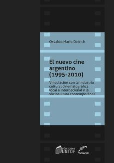
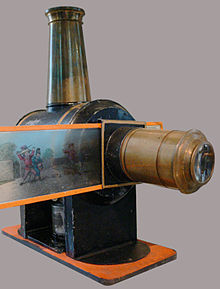
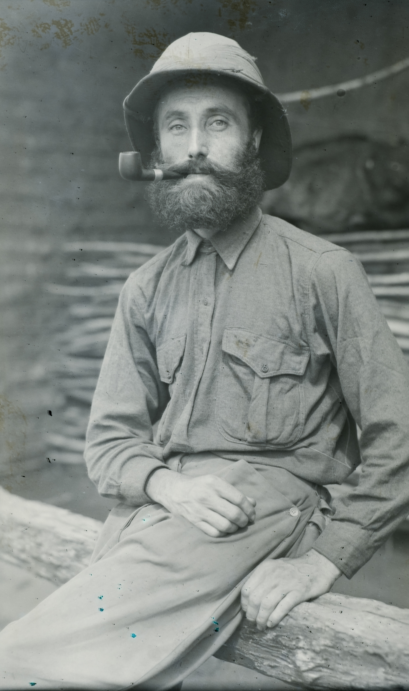

Bienvenidos a Ñande Cine
Breve Historia del Cine en Paraguay
Un lluvioso sábado 2 de junio de 1900 por primera vez un cinematógrafo proyectó imágenes en movimiento ante un público paraguayo. El periódico El Paraguayo registra este histórico acontecimiento, en su sección Sociales, que tuvo lugar en el Teatro Nacional, ubicado en el predio donde actualmente se encuentra el Teatro Municipal de Asunción.
“El aparato que esta noche exhibirá el señor Parravicini pudo funcionar antes de ahora, si se hubiese limitado a la luz, sistema Drumont, que él trae consigo. Más habiendo conseguido aquí, un dínamo de luz eléctrica, cuyo poder luminoso alcanza a 120 volts, el doble que el primero, fue menester postergar unos días”, reporta el anuncio de la función inaugural.
El Paraguayo informa que esa noche se iban a proyectar las vistas, que entonces eran grabaciones breves de diversas situaciones cotidianas principalmente de Francia, tituladas: “Juego de niños”, “Artistas de circo”, “Jardín de plantas en París”, “Un taller de carpintería”, “Entrada humorística por célebres payasos”, “El transformista Casthor”, “Los baños de Diana en Milán”, “Coraceros cruzando el río Saone”, “Una domada en México”, “Maniobra de la artillería española”.
El programa incluyó la comedia “En las garras de mi suegra”, a cargo de la compañía teatral del argentino Florencio Parravicini (1876-1941), que vivió en París (Francia), y que se convertiría en un popular actor en las películas porteñas de las primeras décadas del siglo pasado. Al respecto, en el libro biográfico “Mangoré - Vida y obra de Agustín Barrios” (1994), de Sila Godoy y Luis Szarán, se lee: “Barrios se vinculó también al célebre actor Parravicini, a quien conoció en mayo de 1900 cuando la compañía que dirigía el actor se presentó en el Teatro Nacional de Asunción.”
En lo que podría considerarse como la primera reseña de cine en Paraguay, en su edición del 3 de junio de 1900, El Paraguayo describe: “A pesar de la lluvia, que vino a sorprender a última hora, numerosa concurrencia asistió anoche al teatro, atraída, más que todo, por la novedad del cinematógrafo, que venía anunciándose desde el comienzo de la temporada”.
“La réplica de la chistosa comedia, titulada ‘En las garras de mi suegra’, proporcionó merecidos aplausos a todos los artistas, que la desempeñaron con éxito halagüeño en todas sus partes”, continúa. “Después, hubo un intervalo para probar la fuerza de la luz eléctrica, durante el cual la policía estacionada en la galería, demostró estar demás, pues no supo impedir el escándalo que aquel público insolente promoviera con sus gritos y silbidos. Silbidos y gritos que rayaban en alaridos salvajes, cada vez que se extinguía la luz. De desear fuera que tales bochinches no se repitan en lo sucesivo, porque, sobre ser molesto al restante público, habla muy poco en favor del servicio policial”.
“Al fin, apareció aquello. Es decir, el cinematógrafo. Las vistas son bonitas, pero no muy distintas por la poca luz que se les da. Es de suponer que este pequeño inconveniente podrá obviarse fácilmente, porque, claro está, la primera vez, no podrá exigirse mirabilia. Por lo demás, bien”, concluye la publicación.
En el continente, Asunción tuvo una tardía llegada del cine. El libro “El nuevo cine argentino (1995-2010): Vinculación con la industria cinematográfica local e internacional y la sociocultura contemporánea”, de Osvaldo Mario Daicich”, señala: “Luego de la primera proyección de los hermanos Lumière, en diciembre de 1895 en París, y de su inmediata expansión cinematográfica por diferentes países, a la ciudad de Buenos Aires llegan por vía marítima los rollos fílmicos para la primera proyección pública el 18 de julio de 1896, en el desaparecido Teatro Odeón de Buenos Aires con la programación de ‘L’arrivée d’un train à La Ciotat’ (El arribo del tren a La Ciotat), entre otros cortometrajes”.
La primera proyección de cine en Latinoamérica ocurrió en Rio de Janeiro (Brasil), el 8 de julio de 1896. Siguieron Buenos Aires y Montevideo (18 de julio), México (14 de agosto), Santiago de Chile (25 de agosto), Guatemala (26 de setiembre). El libro mencionado agrega que en 1897, el cine debutó en Lima (2 de enero), La Habana (24 de enero), Maracaibo (28 de enero), La Paz (21 de junio) y Bogotá (1 de setiembre); y, tres años más tarde, en Asunción.
No obstante, existe un curioso antecedente sobre la utilización de un artefacto precursor del cinematógrafo, en pleno Chaco paraguayo: la “linterna mágica”. En el libro “Manufacturing Otherness: Missions and Indigenous Cultures in Latin America”, Sergio Botta relata que en la primera misión anglicana establecida en el Chaco, en setiembre de 1888, a la altura de Concepción, los religiosos británicos se dieron cuenta que los libros ilustrados atraían a los nativos como herramienta para su evangelización y que la fotografía etnográfica se convirtió en el gran interés para sus publicaciones.
En marzo de 1895 se reporta la llegada de una linterna mágica y una serie de fotogramas, con temática bíblica. El misionero y lingüista Richard James Hunt (1874-1938) comentó que en aquella “primera función”, a cargo del misionero Wilfrid Barbrooke Grubb, los indígenas se impresionaron, creyendo que las imágenes del libro habían cobrado vida en la pantalla.
Ciertamente, se atribuyó a Grubb la autoría de unas filmaciones, las más antiguas grabadas en Paraguay que se conserven; pero, en 2017, la investigación de los realizadores belgas Grace Winter y Luc Plantier verificó que pertenecen al marqués Robert de Wavrin (1888-1971), quien en 1913 inició un recorrido por la región y pasó por la misión anglicana. El resultado derivó en el documental “El Marqués de Wavrin, del castillo a la selva”, estrenado en el Festival Internacional de Cine de Paraguay.
Tras la primera proyección de 1900, las primeras filmaciones en territorio paraguayo se hicieron en 1905, por el argentino Ernesto Gunche, refiere el periodista e investigador Manuel Cuenca en “Historia del audiovisual en el Paraguay” (2009). Hacia 1925 se producen las primeras grabaciones paraguayas, con escenas captadas por Hipólito Carrón. El cine nacional despega con las coproducciones del argentino Armando Bo, a partir de “El trueno entre las hojas” (1958). En 1969 se estrena el emblemático mediometraje “El pueblo”, de Carlos Saguier; al que sigue el largometraje “Cerro Corá” (1978), de Guillermo Vera, producido por el régimen de Stroessner.
Desde la década de 1960, se expanden las salas en varias ciudades del país, así como los cines de barrio; y en 1973 aparece el primer autocine en Paraguay, formato que dura hasta mediados de los 80, pero que ahora, en próximas semanas, anuncia su retorno en tres proyectos, debido a que los cines cerraron desde el 10 de marzo pasado, con la cuarentena total.